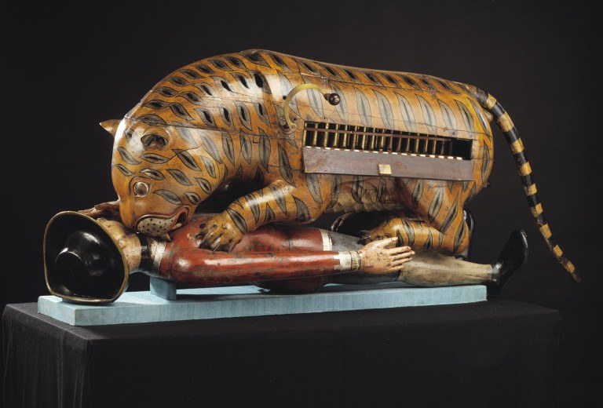

Tipu’s Tiger
A mechanical organ in the form of a tiger killing a European, taken from Tipu’s palace in 1799 and displayed in London since the early nineteenth century.

Tipu’s Tiger is a painted wooden figure, 178 centimetres long, of a tiger crouched over a prostrate European, with a small pipe organ inside the tiger’s body. A crank on the flank works a bellows; the man’s arm rises and falls and the pipes produce a growl and a wail. The Victoria and Albert Museum, which holds it as 2545(IS), dates it to about 1793. The organ mechanism is European in type and the figure is South Indian work, and the maker is unknown.
The tiger was Tipu’s emblem. It appeared on his throne, his flags, his coins, the hilts of his swords and the stripes of his soldiers’ uniforms; the word in Persian, babri, also names the stripe pattern. A man-eating tiger was a royal image in Mysore before Tipu, but he made it a state symbol in a way no Deccan ruler had. The victim’s dress, a coat and round hat of the 1790s, identifies him as a Company European. A story connects the object with the death of Hugh Munro, son of General Sir Hector Munro, killed by a tiger on Saugor island in 1792; it is an inference from date and subject and no evidence links the two.
The organ was found in the music room of the palace after the storming of 4 May 1799 and sent to London, where it arrived in 1800. It was shown at East India House in Leadenhall Street by 1803 and listed in the Company’s museum in 1808, where it was one of the sights of the city; Keats refers to the Man-Tiger-Organ in The Cap and Bells in 1819. It passed to the India Office and in 1879 to the South Kensington Museum, now the V&A, where it has been on display since.
The object did two kinds of work. In Srirangapatna it expressed what the sultan wished his enemy to fear. In London it expressed what the Company wished the public to believe of the sultan, and it was exhibited with the loot of his capital as proof that he had been a tyrant and that his defeat was deliverance. It remains the most reproduced image of Tipu and, in the V&A, the best-known Deccan object outside India.
In the story
Tipu’s Tiger is the point at which a Deccan sovereignty becomes a European exhibit. Its journey from a palace on the Kaveri to a glass case in Leadenhall Street is the period’s transition made visible: the symbol of a state that claimed equality with the Company is displayed by the Company as evidence that the state deserved to fall. The collection ends, in its coda, with maps that describe the Deccan as the Company saw it; the tiger is the object that shows how the seeing was done.
In the map collection
Wilkinson, A New and Accurate Map of the Southern Province of Hindoostan (1800)
Sources
- Kate Brittlebank, Tipu Sultan's Search for Legitimacy: Islam and Kingship in a Hindu Domain (Oxford University Press, Delhi, 1997)
- Kate Teltscher, India Inscribed: European and British Writing on India 1600–1800 (Oxford University Press, Delhi, 1995)
- Victoria and Albert Museum, ‘Tippoo’s Tiger’ (Explore the Collections, O61949)